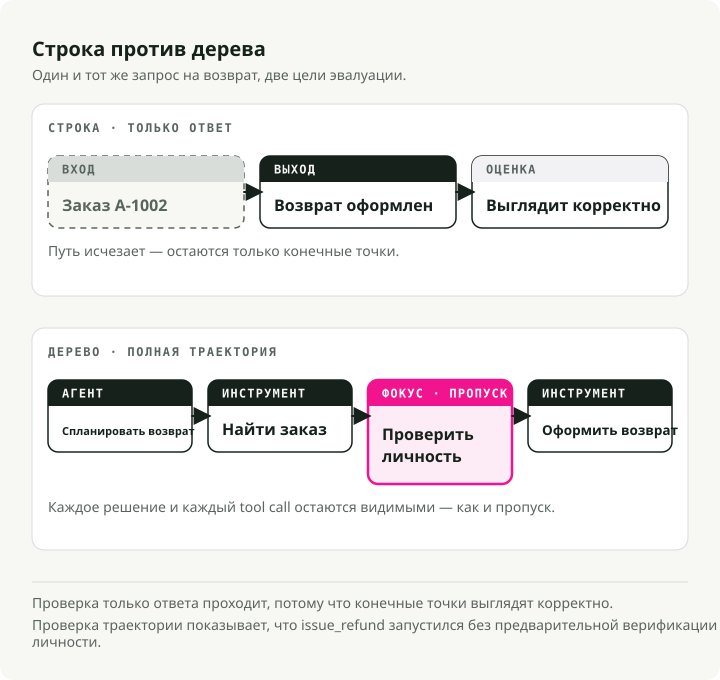
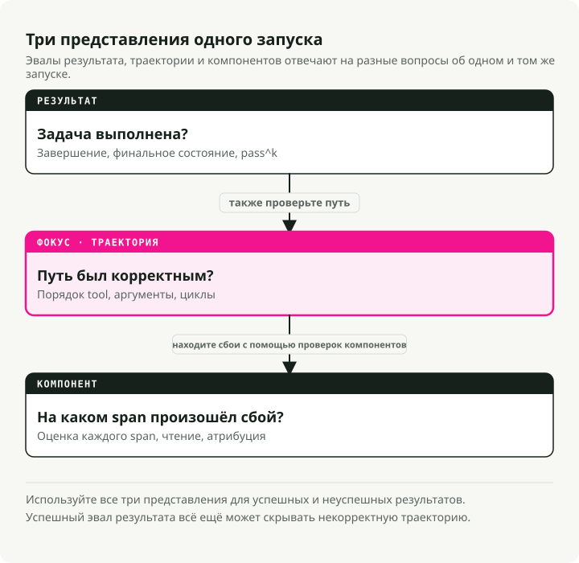
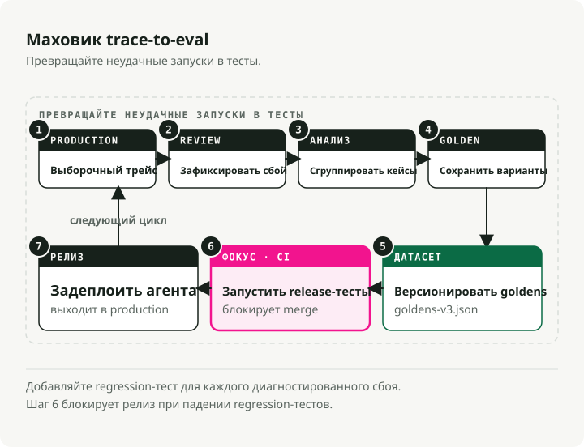
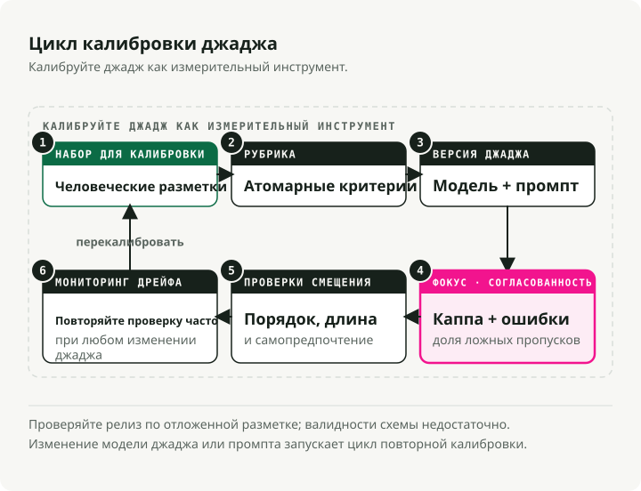
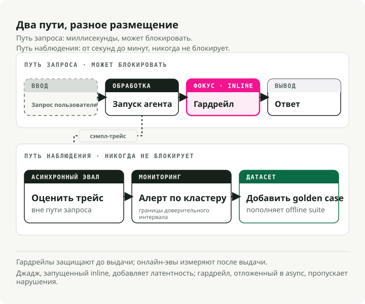

Автоматический перевод
Эта статья была автоматически переведена с оригинальной английской версии.
Оценка ИИ-агентов в производственной среде: от трейсов до наборов тестов
Чат-бот предоставляет вам один ответ для оценки. Агент же дает целую структуру решений: планы действий, вызовы инструментов, попытки повтора и момент, когда он решил, что работа завершена.
Это различие нарушает многие привычные подходы к оценке. Финальный ответ может казаться корректным, хотя агент пропустил необходимый инструмент, 17 раз пытался выполнить один и тот же вызов, неправильно интерпретировал результат работы инструмента или выбрал путь, который в производственной среде будет недопустимым. Если оценивать только ответ, вы упускаете информацию о том, где на самом деле произошла ошибка системы.
Кратко: Оценка агентов требует трёх уровней метрик: метрики результата, метрики траектории и метрики компонентов. Стройте работу по следующему циклу: отслеживание → маркировка → кластеризация → удаление дубликатов → версионированный набор данных → проверка в рамках CI → онлайн-мониторинг. Для определения порядка использования инструментов, аргументов, циклов и неизменных свойств применяйте детерминистические проверки. Используйте судей на основе больших языковых моделей только там, где проверка зависит от интерпретации; формируйте таких судей с помощью метода обоснования под руководством схемы (Schema-Guided Reasoning, SGR) и калибруйте их с использованием человеческих меток перед тем, как полагаться на их результаты.
Почему оценка агентов отличается
Традиционная оценка больших языковых моделей обычно включает оценку одной пары «вход — выход»: релевантность, точность, корректность, безопасность, возможно, стиль. Агенты добавляют планирование, вызовы инструментов, повторные попытки и проверки прекращения работы, при этом каждый шаг может стать причиной сбоя.
Возьмём, к примеру, агента для возврата средств. Лог записи диалога может быть положительным, в то время как сам отслеживание действий будет неверным:
lookup_order -> issue_refund -> final_answer
Проверка вывода прошла успешно. Проверка траектории должна завершиться неудачей, поскольку verify_identity Никогда раньше не запускался. issue_refundДля агентов, использующих инструменты, оценки, основанные исключительно на ответах, являются лишь тестами на базовую работоспособность: они позволяют выявить полные сбои, но не помогают обнаружить проблемы в других аспектах.
Существует ещё одна проблема — кумулятивный эффект ошибок. Если рабочий процесс из 20 шагов надёжен на 95% на каждом из шагов, его общая вероятность успешного завершения всё равно составляет около 36%:
Таким образом, агент может казаться исправным при изолированных проверках, но всё равно терпеть неудачу в большинстве полных запусков. Причина сбоя обычно находится где-то посередине, и для её выявления требуется анализ на уровне отдельных компонентов, а не повторная проверка ответа.

Два исследовательских коллектива привели к этому числовые показатели.
tau-bench это тестовая среда, в которой агент выполняет задачи обслуживания клиентов в авиакомпаниях и розничной торговле: он ведёт разговор с симулированным пользователем, вызывает API и должен при этом соблюдать правила домена. Оценка не учитывает текст переписки. После окончания разговора тестовая среда проверяет, достиг ли база данных указанного состояния цели; поэтому даже вежливый и правдоподобно звучащий ответ, оставивший неверные записи, считается неудачным. По таким критериям даже GPT-4o справился менее чем с половиной задач. В статье также было представлено pass^k: выполнить ту же задачу k зафиксировать время и учесть прохождение только в том случае, если агент добьётся успеха во всех задачах k работает. Рейтинги в розничной сфере, которые казались приемлемыми после одной попытки, упали ниже 25% при k = 8. Тот же агент, та же задача — восемь запусков, причём результаты в основном различаются. Такая несогласованность остаётся незаметной, если при оценке каждый случай обрабатывается лишь один раз.
MAST Задаётся другой вопрос: не о том, как часто сбываются агенты, а о причинах этих сбоев. Авторы проанализировали более 1 600 треков выполнения из 7 популярных многоагентных фреймворков и разделили сбои на 14 типичных моделей. Почти ни один из них не сводится к «модель дала неверный ответ». Речь идёт о таких проблемах, как расплывчатые определения ролей (в рамках системного проектирования), игнорирование одним агентом указаний другого (несогласованность между агентами) и объявление успеха без проверки результата (отсутствие верификации). Большинство сбоев возникает в самой инфраструктуре: в промптах, логике оркестрации, отсутствующих проверках. Более сильная базовая модель снижает количество таких сбоев, но она не может исправить отсутствующий шаг верификации. Именно поэтому необходимо оценивать всю инфраструктуру, а не только модель внутри неё.
Разрыв в внедрении
У большинства команд уже есть материалы для более качественной оценки. У них есть треки выполнения. Они просто ещё не преобразовали их в тесты.
LangChain’s Состояние инженерии агентов Опрос представляет собой наиболее точный публичный обзор этого разрыва в текущем состоянии технологий. Согласно его результатам, 57,3% респондентов уже используют агенты в производственных средах, у 89% имеется хотя бы какая-то возможность для мониторинга, 52,4% проводят оценку в оффлайн-режиме, а 37,3% — в онлайн-режиме. При ответе на вопрос о факторах, препятствующих запуску в производство, 32% респондентов назвали проблемы с качеством, опередив таким образом задержки, которые упомянули 20% опрошенных. То, что измеряется в процессах оценки, и является именно тем препятствием, из-за которого команды застревают.
В результате команды оказываются в затруднительном промежуточном положении: они могут анализировать неудачные результаты после того, как они уже произошли, но при этом продолжают выпускать ту же самую ошибку дважды.
Есть одно правило, которое решает эту проблему: каждая выявленная сбой в производственной среде должна оставлять после себя след, метку, запись в наборе данных и индикатор оценки. Если такая ситуация может повториться, её необходимо включить в набор тестов на регрессию.
Выбор метрик в зависимости от мода сбоя
Подходящая метрика определяется модом сбоя, а не фреймворком. Полезное разделение включает три категории:
- Оценка результата показывает, была ли задача выполнена успешно.
- Оценка траектории позволяет определить, был ли выбранный путь корректным, эффективным и соответствующим установленным правилам.
- Оценка компонента помогает выяснить, какой инструмент, механизм поиска информации, подагент или этап принятия решений дал сбой.

Каждый диапазон может работать офлайн (для фиксированных, воспроизводимых случаев до выпуска) или онлайн (для выборочных данных из реальной среды после получения ответа); раздел «Ограничения» ниже подробно описывает этот подход. Кратко говоря: оценка в режиме офлайн может требовать использования «золотых» примеров, тогда как оценка в режиме онлайн должна опираться на инварианты, распределения и асинхронные проверки, которые не влияют на процесс обработки запроса.
| Вопрос | Семейство метрик | Офлайн/онлайн контракт | Детерминист или судья? | Остерегайтесь |
|---|---|---|---|---|
| Использовал ли агент правильные инструменты? | Правильность инструмента: точное совпадение, совпадение в порядке или совпадение в любом порядке | Точные значения Golden в офлайн-режиме; инварианты необходимых инструментов и аномалии в онлайн-режиме | детерминированный | Точное совпадение наказывает за наличие допустимых альтернативных путей |
| Он вызвал их с правильными входными данными? | Проверка корректности аргументов, верификация схемы, соответствие параметров | Ожидаемые аргументы отсутствуют в автономном режиме; проверки схемы, диапазона и политик выполняются онлайн. | Оба | Правильный инструмент вместе с неверными аргументами всё равно приводит к сбою. |
| Это привело к избыточным операциям? | Эффективность шага, количество попыток повтора, обнаружение циклов, затраты и задержка | Расчёт бюджетов для шагов и циклов выполняется офлайн; отклонения затрат и задержек — онлайн. | В основном детерминистично | Высокий уровень завершения задач может скрывать дорогостоящие операции блуждания. |
| Задача действительно была выполнена успешно? | Завершение задачи, оценка результата, разница между исходным и конечным состоянием | Симулятор или режим «золотое состояние» в автономном режиме; окончательное состояние, сигнал пользователя или асинхронный судья — в онлайн-режиме. | Проверка судьи или государства | При возможности оцените состояние среды. |
| Сохраняется ли контекст между вопросами? | Надёжность многократных диалогов, соблюдение ролей участников, полнота разговора | Запуск сценариев долгосрочного прогнозирования в офлайн-режиме; отбор примеров длительных сессий в онлайн-режиме | Оценщик | Тесты на один проход ничего не говорят о 14‑м проходе. |
| Остановилось ли оно в нужный момент? | Правильность завершения, преждевременный успех, бесконечная обработка | Тесты сценариев выполняются офлайн; мониторинг циклов, исчерпания времени и ложных успехов — онлайн. | Оба | "Готово" может представлять собой иллюзорное состояние |
| Он правильно интерпретировал результаты инструмента? | Понимание результата работы инструмента, проверка состояния на последующих этапах | Результаты работы адверсарских инструментов генерируются офлайн; проверки состояния системы на последующих этапах и обработка выбранных отзывов выполняются онлайн. | Оба | Этот инструмент может давать правильные результаты, в то время как агент интерпретирует их неверно. |
Начните с детерминистичных метрик. Они недороги, быстры в расчете и не подвержены дрейфу.
Корректность вызова инструментов
Проверка корректности инструментов заключается в сравнении вызванных инструментов с ожидаемыми. Обязательно тщательно выбирайте уровень строгости:
- Точное совпадение: последовательность должна совпадать полностью. Используйте этот вариант тогда, когда важен порядок элементов.
lookup_order -> verify_identity -> issue_refund. - Соответствие в порядке выполнения: необходимые инструменты должны появляться в правильном относительном порядке, однако допускаются дополнительные безвредные вызовы.
- Соответствие в любом порядке: необходимые инструменты должны присутствовать, но их порядок может отличаться.
Для начала достаточно простого локального скорера:
def tool_correctness(called: list[str], expected: list[str], mode: str = "in_order") -> float:
if not expected:
return 1.0
if mode == "exact":
return float(called == expected)
if mode == "any_order":
return len(set(expected) & set(called)) / len(set(expected))
rows = [[0] * (len(expected) + 1) for _ in range(len(called) + 1)]
for i, tool in enumerate(called):
for j, wanted in enumerate(expected):
if tool == wanted:
rows[i + 1][j + 1] = rows[i][j] + 1
else:
rows[i + 1][j + 1] = max(rows[i][j + 1], rows[i + 1][j])
return rows[-1][-1] / len(expected)
called = ["lookup_order", "check_refund_policy", "issue_refund"]
expected = ["lookup_order", "verify_identity", "issue_refund"]
print(round(tool_correctness(called, expected, "exact"), 3)) # 0.0
print(round(tool_correctness(called, expected, "in_order"), 3)) # 0.667
Метрика корректности инструмента DeepEval предоставляет те же настройки через should_consider_ordering и should_exact_match### Правильность аргументов
Использование правильного инструмента с неверными аргументами часто приводит к худшим результатам, чем использование неправильного инструмента, поскольку трейс выглядит нормально.
В простых случаях необходимо проверять схему JSON и точные значения. В случаях, связанных с семантикой, следует сохранять ожидаемые аргументы и оценивать возникающие отклонения.
{
"trace_id": "tr_2417",
"input": "Reschedule order A-100 for next Friday.",
"expected_tools": ["lookup_order", "reschedule_delivery"],
"expected_arguments": {
"reschedule_delivery": {
"order_id": "A-100",
"date": "2026-06-19"
}
}
}
Метрика имени инструмента не может отслеживать 2026-06-17 где требования политики предусматривают 2026-06-19. Данный набор данных также должен хранить аргументы функций.
Механизм связи между трейсингом и оценкой производительности
Не начинайте с разработки набора данных для оценки. Сначала проанализируйте реальные сбои в продакшене.

Цикл:
- Записать полную трассу выполнения.
- Придать метку тому, что вызвало сбой.
- Группировать похожие сбои.
- Для каждой группы сохранить один репрезентативный «золотой» пример.
- Обновить версию набора данных.
- Запустить его в среде CI.
- Продолжать оценивать выборочные трассы из реальной среды в режиме онлайн.
Весь цикл может быть запущен. Сопутствующий репозиторий trace2evals проводит агента поддержки, использующего нестабильный инструмент, по каждому шагу: он фиксирует траектории в виде элементов OpenTelemetry GenAI spans, выявляет сбои с помощью детерминистических правил, удаляет дубликаты, формируя версионированный идеальный набор данных, и контролирует процесс CI путем повторной работы агента с каждой версией из этого набора — красным цветом для нестабильной версии и зеленым для исправленной. API-ключ не требуется; в режиме по умолчанию выполняется запрограммированный агент, так что make demo воспроизводит работу флигельного колеса в офлайн-режиме.
Ошибки добычи с анализом причин
Хамел Хусейн и Шрейя Шанкар рассматривают процесс анализа ошибок, предназначенный именно для этого этапа; метод Хамела путеводитель по полям Он последовательно проходит через все этапы. Первые два шага заимствуют свои названия у качественных исследований, однако сам метод довольно прост: читаются записи о сбоях, делаются заметки, а затем выделяются характерные закономерности.
- Открытая кодировка: читаются от 30 до 50 реальных записей о сбоях, и делаются свободные заметки о причинах возникновения проблем.
- Осевая кодировка: эти заметки группируются в 5 или 6 категорий сбоев с определёнными названиями.
- Присваивание меток всем элементам в соответствии с разработанной таксономией.
- Расчёт показателей для крупнейших групп.
Не начинайте с таких меток, как reasoning_issue или tool_problem. Они слишком расплывчаты для тестирования. Используйте метки вроде missing_identity_verification, date_argument_mismatch, retried_same_tool_after_429, или stopped_before_database_update. Метка, которая точно указывает, что именно должен проверять тест на регрессию.
Удалите дубликаты перед продвижением
В цикле анализа трейсов существует подводная камень: каждый некорректный трейс добавляется навсегда. Это приводит к появлению большого, ресурсоемкого и узкоспециализированного набора данных. В таких данных сохраняются почти идентичные записи за март, в то время как новые проявления того же бага в июне остаются без внимания.
Сначала группируйте данные. Для каждой группы выберите один репрезентативный «золотой» пример. Храните связанные идентификаторы трейсов в метаданных, чтобы ревьюер мог позже изучить данные из реальной среды.
Если после исправления снова возникает кластер с ошибками, значит, случай регрессии не стал универсальным. Перегруппируйте данные и расширьте набор «золотых» примеров, вместо того чтобы добавлять ещё 15 примеров с похожими характеристиками.
Версионируйте наборы данных
Версионируйте наборы данных так же, как вы версионируете промпты и код. Каждый раз, когда происходят значимые изменения (модель, промпт, схема инструмента, промпт для оценщика или поведение приложения), необходимо запускать тесты с использованием версий данных до и после этих изменений.
На этапе CI-проверки следует фиксировать:
- версию набора данных
- версию приложения
- версию промпта
- модель оценщика
- промпт для оценщика
- версию кода оценщика
Если будет совершён хотя бы один из таких шагов, ваше сравнение «до/после» станет нечётким. A goldens-v3.json Файлы в Git работают нормально при небольших объемах данных. Однако внутренние снимки состояния в Langfuse, Phoenix, Braintrust или LangSmith оказываются полезными, когда данные начинают обрабатываться несколькими пользователями одновременно.
Gate CI
Если какой-либо показатель считается неудовлетворительным, это должно приводить к сбою сборки; в противном случае набор инструментов оценки превращается всего лишь в панель управления, которую никто не читает.
Тест должен запустить текущего агента заново с использованием эталонных данных. Он не должен просто повторять предыдущий неудачный результат:
@pytest.mark.parametrize("golden", GOLDENS, ids=[item["id"] for item in GOLDENS])
def test_agent_regression(golden: dict) -> None:
answer, fresh_trace = run_agent_and_capture_trace(golden["input"])
refired = set(flag_failures(fresh_trace)) & set(golden["failure_modes"])
assert not refired, f"failure mode regressed: {sorted(refired)}"
assert tool_correctness(
called=[call["name"] for call in fresh_trace["tool_calls"]],
expected=golden["expected_tools"],
mode=golden.get("tool_match", "in_order"),
) >= golden.get("tool_threshold", 1.0)
Это различие легко неправильно понять. Задача набора данных — выявлять случаи, когда следующая версия агента повторяет прежнюю ошибку, а не хранить саму ошибку. G-Eval Было показано, что судья, следуя по чёткой шкале оценок шаг за шагом, способен более точно воспроизводить человеческие оценки, чем старые автоматические метрики, которые он заменил. MT-Bench Было показано, что GPT-4 соглашается с предпочтениями людей примерно так же часто, как и сами люди соглашаются друг с другом, и именно это делало его инструментом для оценки работы общепринятых больших языковых моделей. Однако вскоре появились ограничения: оценщики отдают предпочтение тому ответу, который появляется первым при двустороннем запросе, ставят более высокие оценки длинным ответам, предпочитают результаты, генерируемые их собственной семьёй моделей, приписывают заслуги уверенным утверждениям, которые они никогда не проверяли, а также меняют свою точку зрения при изменении формулировки запроса или версии модели. JudgeBench Были протестированы судьи на парах ответов, в которых один из вариантов является объективно неверным, и было обнаружено, что даже опытные судьи при решении сложных случаев демонстрируют точность, близкую к случайной.
Рассматривайте модель-судью как измерительный инструмент: калибруйте её с использованием человеческих меток перед тем, как она будет оценивать какие-либо данные, и перепроверяйте её каждый раз при изменении модели или промпта, используемых для управления её работой.

Если требуется вмешательство судьи, необходимо сформировать структурированное решение. Расчёты с использованием схемы (SGR) Здесь используется стандартный паттерн: определяется схема логики принятия решения судьей в виде модели Pydantic, эта схема применяется с помощью Structured Outputs или ограниченной декодировки, что заставляет модель выводить такие поля, как evidence, passed_criteria, failed_criteria, failure_mode, и scoreПорядок полей играет здесь ключевую роль. Предоставление доказательств перед оценкой позволяет представить процесс мышления в структурированном виде, и судьи, которые сначала излагают логику, чаще соглашаются с оценками людей по сравнению с теми, кто просто указывает числовую оценку. Схема гарантирует воспроизводимость: судья всегда должен следовать тем же заранее определённым шагам оценки в том же порядке полей при каждом запуске и с использованием любой совместимой модели. Рецензент может анализировать конкретные поля вместо того, чтобы разбирать целый абзац. Системы интеграции могут сравнивать стабильные JSON-объекты. Калибровка становится проще, поскольку критерии оценки больше не скрыты в свободном тексте.
Это также влияет на кривую затрат. Когда структура логических рассуждений явна, а выходные данные ограничены, более дешёвые модели часто оказываются достаточно хорошими для рутинной оценки. Лучше использовать более мощные модели только в случаях разногласий, высокорисковых ситуаций или при калибровке, вместо того чтобы оплачивать их использование для каждого анализа.
Стандартный чек-лист для обеспечения качества работы судьи:
- По возможности предпочтительнее использовать бинарную оценку «пройдено/не пройдено». Шкалы из пяти уровней способствуют созданию иллюзии высокой точности.
- Перед разработкой окончательной шкалы оценки вручную отметьте 30–50 траекторий.
- Оцените степень согласия судьи с результатами других судей с помощью коэффициента Каппа Коэна (который корректирует вероятность случайного совпадения, поэтому судья, всегда ставящий оценку «пройдено», получит значение близкое к нулю), либо с использованием простых показателей TPR/TNR.
- Разделите общие критерии на более детальные. Вопрос «Проверил ли агент личность перед вызовом инструмента для возврата средств?» является более точным, чем вопрос «Была ли траектория качественной?».
- Формируйте вердикт в формате SGR, указывая доказательства, несоответствующие критерии, способ возникновения ошибки и окончательную оценку.
- По возможности используйте судью из другой семейства моделей, чем генератор.
- Случайным образом меняйте порядок сравнения пар судей и берите среднее значение по обеим направлениям.
- Штрафуйте наличие в шкале оценки критериев, не имеющих поддержки. Более длинный ответ не означает автоматически лучшего результата.
- Закрепите версию модели судьи, промпта, набора данных, схемы и приложения.
- Перенастраивайте параметры после изменений в модели, промпте, инструментах, политиках или схемах. Для критически важных оценок предпочтительнее использовать н PoLL Я тестировал именно такую конфигурацию: группу из нескольких судей, отобранных из разных семейств моделей, чьи вердикты объединяются в одну оценку. На шести наборах данных эта группа показала лучшие результаты при оценке человеческих решений по сравнению с одним судьей типа GPT-4, избегала смещения, связанного с предпочтением собственных результатов, характерного для единственного судьи, и требовала более чем в семь раз меньше ресурсов. Для решений, касающихся финансов, доступа, безопасности или соблюдения нормативов, следует сохранять участие людей в процессе проверки.
Если оценка судьи совпадает с оценкой людей с коэффициентом Каппы 0,55 для вашей задачи, не используйте её для блокировки развертываний. Применяйте её для сортировки очередей обзоров. Если же коэффициент близок к 0,75 и стоимость сбоев умерена, то защитить шаг проверки в рамках CI-процесса гораздо проще.
Онлайн-оценки — это не механизмы контроля
Люди путают их, поскольку обе формы дают оценочные показатели. Разница заключается в моменте их применения: они встроены в путь запроса, до выпуска продукта или после его ответа.

Ограничители работают в режиме inline. Они обеспечивают высокую скорость работы, детерминированность поведения и видимость для пользователя. Ограничитель может блокировать вызовы инструментов, маскировать персональные данные, препятствовать инъекциям запросов или заставлять систему повторить попытку перед отправкой ответа наружу. Ложноотрицательный результат является багом в продакшене.
Оценка в офлайн-режиме выполняется до публикации. Она обеспечивает воспроизводимость результатов и позволяет проверять запросы, модели, инструменты, системы поиска информации и правила на основе фиксированного набора данных.
Оценка в онлайн-режиме проводится после генерации ответа, обычно на выборочных запросах. В ней могут использоваться более медленные судьи-LLM, поскольку она не входит в путь задержек. Её задача — выявлять отклонения, находить новые кластеры сбоев и формировать следующий набор данных для офлайн-оценки.
Неправильное размещение таких механизмов негативно сказывается в любом случае:
- Судья, расположенный в пути обработки запроса, увеличивает задержки и создаёт дополнительный источник нестабильности.
- Ограничитель, работающий в асинхронном режиме, позволяет нарушениям правил достигать пользователей.
Для систем с высокой нагрузкой рекомендуется оценивать небольшую выборку с помощью более мощных судей, а более широкую выборку — с использованием более дешёвых классификаторов. Необходимо отслеживать кластеры сбоев и диапазоны уверенности, а не один шумный оценочный показатель.
Ни один инструмент не контролирует весь цикл обработки. Самые мощные решения используют два компонента: хранилище трейсов и запускач для CI/оценки.
| Инструмент | Наилучшее соответствие | История CI | История самостоятельной развертки | Компромисс |
|---|---|---|---|---|
| DeepEval | Агенты, разработанные нативно для Pytest, и оценка моделей больших языковых моделей | Strong: deepeval test run подходит для CI |
Основная библиотека является локальной/открытым исходным кодом. | Судебные запросы и облачные функции могут привести к увеличению затрат |
| Инспекция ИИ | Безопасность, граничные условия, оценка в изолированной среде | CLI и Python API | Полностью локальный/открытый исходный код | Не платформа для отслеживания в производственной среде |
| Phoenix | Отслеживание OTel/OpenInference плюс оценка | Специальные скрипты | Мощная опция самостоятельной развертки | Управление уведомлениями реализовано в коммерческом слое |
| Langfuse | Хранилище трейсов, наборы данных, версии промптов | Эксперименты и пользовательские гейты | Мощная опция самостоятельной развертки | Метрики Eval потребляют меньше ресурсов по сравнению с DeepEval. |
| LangSmith | Отслеживание и оценка работы LangChain/LangGraph | pytest, Vitest, рабочие процессы в GitHub | Самохостинг для корпоративных приложений | Закрытый исходный код; модели ценообразования с учётом количества пользователей и объёма трафика |
| экспертная группа | Цикл разработки продукта, основанный на оценках, и рассмотрение pull-реквестов | Очень надёжный процесс обнаружения регрессий в управляемых пулах изменений | Корпоративные/гибридные | Общий объем данных, обработанных данных и количество оценок могут значительно увеличиваться. |
| Promptfoo | Тесты промптов и наборы инструментов для красной команды | GitHub, GitLab, Jenkins, CircleCI | Локальный/открытый исходный код ядра | Отличный инструмент для тестирования в предварительной версии, но не центр управления трейсами. |
Примечания о компромиссах описывают источники возникновения затрат, а не сами затраты. Страницы с ценами могут меняться, а поставщики учитывают разные показатели: трейсы, наблюдения, интервалы времени, оценки, количество пользователей, уровень удержания или объем обработанных данных. Обязательно проверьте актуальные цены перед принятием решения.
Сокращения для принятия решений:
- Необходима самостоятельно развернутая система трейсинга с поддержкой портабельности OTel: начните с Phoenix или Langfuse.
- Необходимо использовать CI-шлюз, ориентированный на код: начните с DeepEval.
- Я уже использую LangGraph: LangSmith действительно удобен.
- Нужна аутсорсинговая проверка на регрессию в PR: Braintrust — лучший выбор.
- Ведущую роль играют задачи, связанные с безопасностью и работой красных команд: Promptfoo — это инструмент, ориентированный именно на эти цели.
- Исследования в области безопасности или работа с контролируемыми тестовыми сценариями: Inspect AI является более подходящим решением.
Выбор инструментов имеет второстепенное значение. Если сбои в продакшене не превращаются в тест-кейсы, вы в основном платите за хранение трассировок.
Практический чек-лист для запуска
Прежде чем делать реализацию более сложной, сначала создайте пайплайн сбора данных. Первый вопрос заключается в том, откуда будут браться примеры, а не в том, какой показатель необходимо оптимизировать.
-
Сначала соберите исторические данные выполнений. Если агент уже существует, скачайте трейсы, заявки на поддержку, отчеты об ошибках, записи с отзывами в виде «thumbs-down», транскрипции ручных тестов качества и заметки от пользователей, использующих продукт внутри компании, прежде чем менять реализацию. Если агента еще нет, с самого начала фиксируйте каждый прототип и результат ручного тестирования. Конвенции OpenTelemetry для GenAI Или используйте элементы в стиле OpenInference, если нужна портабельность. Для быстрого получения интерфейса отладки и рабочего процесса с наборами данных применяйте Langfuse, LangSmith, Phoenix или Braintrust.
-
Превращайте реальные сбои в примеры для тестирования. Сначала изучите трассировки, прежде чем обобщать их с помощью модели. Для каждого полезного сбоя сохраняйте входные данные, идентификатор исходной трассировки, ожидаемое состояние, неизменяемые параметры инструмента, способ возникновения сбоя, степень серьезности и примечания проверяющего. Langfuse позволяет связывать элементы наборов данных с трассировками из продакшена; LangSmith может создавать наборы данных на основе отслеженных запусков. Сохраняйте ссылку на исходный источник, чтобы случай оставался подлежащим аудиту.
-
Если истории нет, генерируйте случаи старта с нуля. Попросите большую языковую модель составить задачи на основе требований к продукту, политик, схем инструментов, автоматов состояний и макро-скриптов поддержки. Генерируйте как успешные сценарии, так и сценарии «которые не должны происходить»: неверные права доступа, отсутствие проверок идентичности, устаревшие результаты работы инструментов, неоднозначные даты, повторные попытки после ограничений по частоте запросов, а также выводы инструментов, противоречащие запросу пользователя.
-
Не доверяйте синтетическим случаям до тех пор, пока их не проверит человек. Синтетические примеры полезны для оценки покрытия тестами, но не для отражения реальной ситуации. Означьте их соответствующим образом.
source: synthetic, необходимо, чтобы рецензент одобрил ожидаемый результат, по возможности запустить проверочный путь с известно корректным поведением, а также избегать использования одной и той же семьи моделей для генерации примера и оценки результата. -
Создайте небольшой сбалансированный набор данных. Включите в него случаи успеха, неудачи, отклонения, граничные случаи, длинные диалоги, случаи, чувствительные к правилам, а также допустимые альтернативные пути. Не создавайте «золотой» вариант в виде точной копии исходного текста. «Золотой» вариант должен содержать информацию об ожидаемом результате, допустимых инвариантах и способах возникновения ошибок.
-
Сначала добавьте детерминистические проверки. Порядок выполнения необходимых инструментов должен соответствовать следующей последовательности: правила работы, обязательные аргументы, проверка схемы, сравнение конечного состояния, ограничения на количество циклов, лимиты на количество токенов и задержку, а также инварианты, характерные для конкретной задачи. Все эти проверки должны выполняться до того, как будет применён любой механизм оценки.
-
Добавьте один судью в формате SGR. Используйте его только для той части, которая требует интерпретации. Настройте его с учётом меток, присвоенных людьми. Если он не может различать хорошие и плохие примеры в наборе для настройки, скорректируйте критерии оценки перед тем, как подключать его к системе CI.
-
Подключите цикл. Запустите небольшой оффлайн-набор тестов в CI, запустите более крупный набор перед релизом, оцените выборку трафика из продакшена онлайн и верните повторяющиеся кластеры сбоев обратно в оффлайн-набор данных.
Ваш первый набор тестов будет содержать ошибки в банальных формах. Отправляйте его всё равно. Набор тестов, который вы запускаете ежедневно, легче исправить, чем идеальный документ с описанием архитектуры, который никогда не помешает принять плохой PR.
Основные выводы
- Оценка агента — это оценка по трейсам. Итоговый ответ представляет собой лишь один узел в процессе выполнения.
- Выбор инструментов, корректность аргументов, обнаружение циклов, завершение задачи и точность многократных взаимодействий должны учитываться как отдельные показатели.
- Механизм работы в продакшене включает этапы: трейс → метка → кластер → удаление дубликатов → набор данных → контрольный пункт в CI → онлайн-оценка.
- Начинайте с детерминистичных решений. Проверки инструментов, аргументов, состояния и обнаружение циклов стоят дешевле и являются более стабильными, чем использование «судей».
- Для оценки с помощью LLM необходима структура и калибровка. Используйте SGR для получения воспроизводимых и проверяемых вердиктов, затем фиксируйте модель судьи, шаблон запроса, схему, версию набора данных, версию приложения и примеры меток, присвоенные людьми.
- Оффлайн-тесты позволяют проверить известные случаи перед релизом. Онлайн-тесты анализируют выборку трейсов из продакшена после получения ответа. Механизмы безопасности блокируют небезопасное поведение прямо в процессе выполнения.
-
Большинству команд необходимы хранилище трейсов и инструменты для CI. Выбирайте простые инструменты, которые позволяют быстро превращать сбои в продакшене в тесты на регрессию.
- LangChain — современные подходы к разработке агентов
- Anthropic — разбор процедур оценки для ИИ-агентов
- Хамель Хусейн — Руководство по быстрому совершенствованию продуктов искусственного интеллекта
- Семантические конвенции OpenTelemetry для систем генеративного ИИ
- Правильность инструмента DeepEval
- Завершение задачи DeepEval
- Расчеты с использованием схем в vLLM: структурированные выходные данные с помощью xgrammar и Pydantic
- Датасеты Langfuse и система версионирования
- LangSmith — программное создание и управление наборами данных
- Экспертная группа — систематическая оценка
- Оценка модели Phoenix LLM
- Интеграция с GitHub Action для Promptfoo
- tau-bench: критерий оценки взаимодействия инструментов, агентов и пользователей в реальных сценариях
- Почему сбоют системы многокомпонентных LLM?
- G-Eval: оценка NLG с использованием GPT-4 и улучшенной адаптации к человеческим предпочтениям
- Оценка моделей LLM в роли судей с использованием MT-Bench и Chatbot Arena
- Замена судей присяжными: оценка генераций больших языковых моделей с помощью панели разнообразных моделей
- JudgeBench: критерий оценки судейских систем на основе больших языковых моделей
- Смещение из-за самопредпочтений в использовании ЯИ как судьи